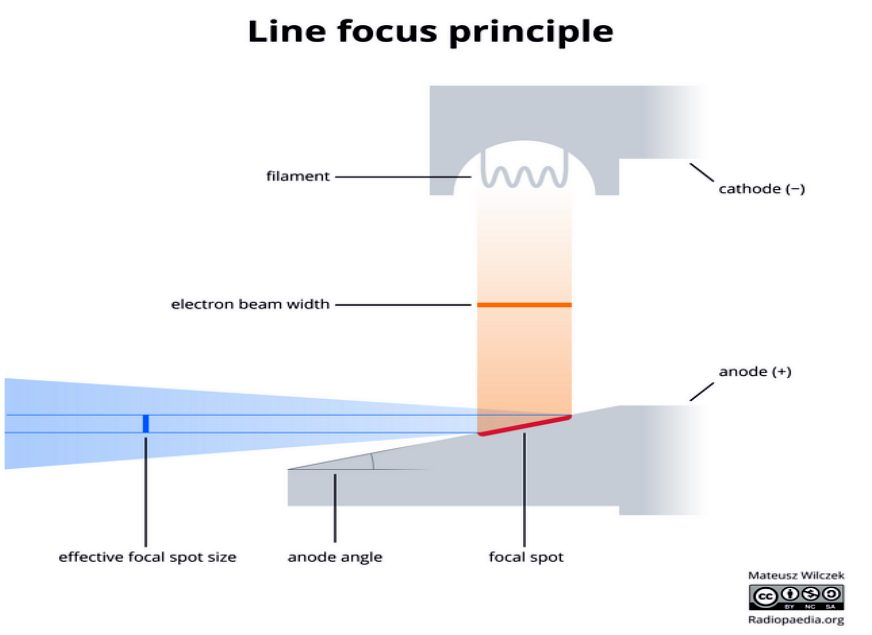
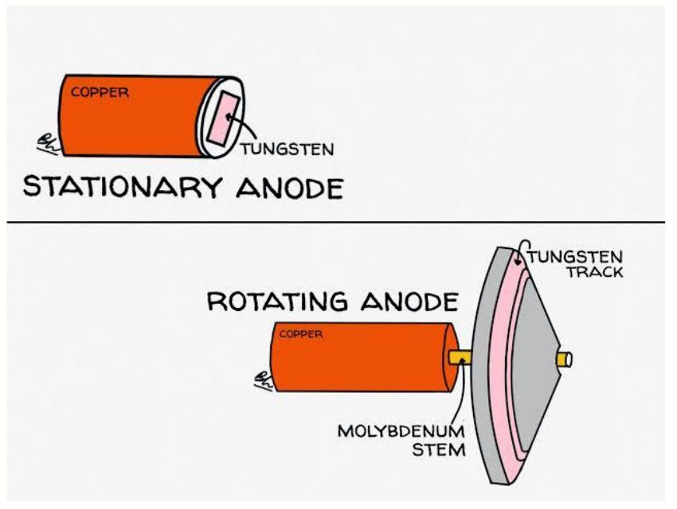
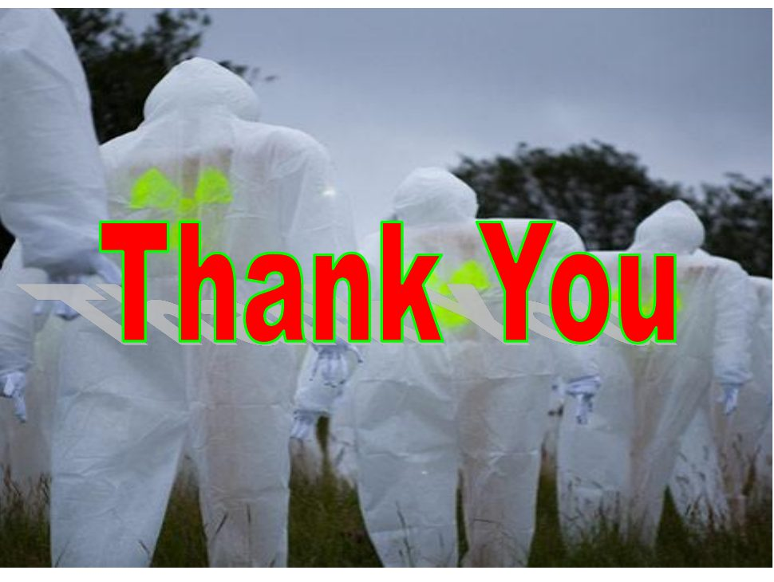

محدِّدات أنبوب الأشعةLimitation of the X-ray Tube (Line Focus, Rotation Anode Tube and Heat Rating)
نظري · م03 · 3.6 دقيقةأقسام المحاضرة (3)
البؤرة ومبدأ البؤرة الخطيةFocus and the Line Focus Principle
محدِّدات أنبوب الأشعةLimitation of the x-ray tube
- • The limitations of an X-ray tube primarily relate to its design and operational constraints.تتعلّق محدِّدات أنبوب الأشعة السينية أساساً بتصميمه وقيود تشغيله.
A. Focus
أ. البؤرة.
- • Focus in an X-ray tube refers to the area on the anode where the electron beam hits, creating X-rays.تشير البؤرة في أنبوب الأشعة السينية إلى المنطقة على الأنود التي تصطدم بها حزمة الإلكترونات فتُنتج الأشعة السينية.
- • The size of this focal spot plays a critical role in determining the sharpness and quality of the X-ray image.حجم هذه البؤرة يؤدّي دوراً حاسماً في تحديد حدّة صورة الأشعة السينية وجودتها.

- • Line Focus Principle: An angled anode is used to balance heat management and resolution by creating a small effective focal spot while maintaining a larger area for heat dissipation.مبدأ البؤرة الخطية (line focus principle): يُستعمل أنود مائل للموازنة بين التحكّم بالحرارة والدقّة، وذلك بتكوين بؤرة فعّالة صغيرة مع الحفاظ على مساحة أكبر لتبديد الحرارة.
- • Focal Spot Size: Smaller spots improve image resolution, but generate more heat. Larger spots dissipate heat better but reduce image clarity.حجم البؤرة: البؤر الأصغر تحسّن دقّة الصورة لكنها تولّد حرارة أكثر. أمّا البؤر الأكبر فتبدّد الحرارة بصورة أفضل لكنها تقلّل وضوح الصورة.
- • Dual Focal Spots: Some X-ray tubes offer two focal spot sizes-(small for detailed imaging ) and (large for higher power situations).البؤرتان المزدوجتان: بعض أنابيب الأشعة تقدّم حجمين للبؤرة: (صغيرة) للتصوير التفصيلي و(كبيرة) للحالات التي تتطلّب قدرة أعلى.
أنبوب الأنود الدوّارRotation Anode Tube
B. Rotation anode tube
ب. أنبوب الأنود الدوّار.
- • A rotating anode tube is an essential component in X-ray machines, commonly used in medical imaging and industrial applications.أنبوب الأنود الدوّار (rotating anode tube) مكوّن أساسي في أجهزة الأشعة السينية، ويُستعمل عادةً في التصوير الطبي والتطبيقات الصناعية.
- • Its primary function is to produce X-rays by converting the energy from high-velocity electrons into X-ray photons when they collide with the anode target.وظيفته الأساسية إنتاج الأشعة السينية بتحويل طاقة الإلكترونات عالية السرعة إلى فوتونات أشعة سينية عند اصطدامها بهدف الأنود.
- • This design improves the efficiency and durability of X-ray production.هذا التصميم يحسّن كفاءة إنتاج الأشعة السينية ومتانته.
- • The tube consists of a cathode that emits electrons and a rotating anode, typically made of tungsten, which serves as the target for the electrons.يتكوّن الأنبوب من كاثود يُطلق الإلكترونات وأنود دوّار، يُصنع عادةً من التنغستن، ويكون هدفاً للإلكترونات.
- • In a rotating anode tube, the anode rotates at high speeds (usually between 3,000 and 10,000 revolutions per minute) to distribute the heat generated by the electron impacts over a larger surface area. This prevents overheating and allows for more intense X-ray output, which is crucial for high-resolution imaging.في أنبوب الأنود الدوّار يدور الأنود بسرعات عالية (عادةً بين 3,000 و10,000 دورة في الدقيقة) لتوزيع الحرارة الناتجة عن اصطدام الإلكترونات على مساحة سطح أكبر. وهذا يمنع فرط السخونة ويسمح بخرج أشعة سينية أشدّ، وهو أمر حاسم للتصوير عالي الدقّة.
Key benefits of a rotating anode tube include:
من الفوائد الرئيسية لأنبوب الأنود الدوّار:
- • 1. Heat management: Spreading the heat over a rotating surface prevents damage and prolongs the life of the tube.1. التحكّم بالحرارة: توزيع الحرارة على سطح دوّار يمنع التلف ويُطيل عمر الأنبوب.
- • 2. Higher X-ray output: Allows for more powerful and precise X-ray beams, improving the quality of images.2. خرج أشعة سينية أعلى: يتيح حزم أشعة سينية أقوى وأدق، مما يحسّن جودة الصور.
- • 3. Improved durability: The rotating design minimizes wear, especially under high load conditions3. متانة أفضل: التصميم الدوّار يقلّل البلى، خصوصاً في ظروف الأحمال العالية.

التصنيف الحراريHeat Rating
C. Heat rating
ج. التصنيف الحراري.
- • The heat rating refers to the maximum amount of heat that a device or component, such as an X-ray tube, can safely handle without damage.يشير التصنيف الحراري (heat rating) إلى أقصى كمية من الحرارة يستطيع جهاز أو مكوّن، مثل أنبوب الأشعة السينية، تحمّلها بأمان دون تلف.
- • Importance of Heat Rating:أهمية التصنيف الحراري:
- • 1. The heat generated in an X-ray tube primarily stems from the collision of electrons with the anode, where about 99% of the energy is converted to heat and only 1% to X-rays.1. الحرارة المتولّدة في أنبوب الأشعة السينية تنتج أساساً عن اصطدام الإلكترونات بالأنود، إذ يتحوّل حوالي 99% من الطاقة إلى حرارة و1% فقط إلى أشعة سينية.
- • If this heat is not dissipated efficiently, it can damage the anode, leading to, melting, or even tube failure.إذا لم تُبدَّد هذه الحرارة بكفاءة، فقد تُتلف الأنود، مما يؤدّي إلى الانصهار أو حتى تعطّل الأنبوب.
- • 2. Each X-ray tube has a heat rating that indicates its capacity to handle heat during continuous or short-burst operations.2. لكل أنبوب أشعة سينية تصنيف حراري يدلّ على قدرته على تحمّل الحرارة أثناء التشغيل المستمر أو التشغيل القصير المتقطّع.
- • The higher the heat rating, the more robust the tube is under frequent or high-intensity use.كلّما ارتفع التصنيف الحراري، كان الأنبوب أمتن عند الاستعمال المتكرّر أو عالي الشدّة.
- • Technicians must be aware of the heat rating to avoid overloading the tube, which could result in costly downtime and repairs..على الفنيين أن يكونوا على دراية بالتصنيف الحراري لتجنّب تحميل الأنبوب فوق طاقته، وهو ما قد يؤدّي إلى توقّف مكلف عن العمل وإلى إصلاحات.

المحاضرة مسموعة
نص الأستاذ بالإنكليزي مثل الأصل · 3.6 دقيقة. اضغط أي جملة تسمعها، أو مصطلح منقّط تسمع لفظه ومعناه.
Focus and the Line Focus Principleالبؤرة ومبدأ البؤرة الخطية
Focus and the Line Focus Principle
Limitation of the x-ray tube
The limitations of an X-ray tube primarily relate to its design and operational constraints.
A. Focus
Focus in an X-ray tube refers to the area on the anode where the electron beam hits, creating X-rays.
The size of this focal spot plays a critical role in determining the sharpness and quality of the X-ray image.
Line Focus Principle: An angled anode is used to balance heat management and resolution by creating a small effective focal spot while maintaining a larger area for heat dissipation.
Focal Spot Size: Smaller spots improve image resolution, but generate more heat. Larger spots dissipate heat better but reduce image clarity.
Dual Focal Spots: Some X-ray tubes offer two focal spot sizes-(small for detailed imaging ) and (large for higher power situations).
Rotation Anode Tubeأنبوب الأنود الدوّار
Rotation Anode Tube
B. Rotation anode tube
A rotating anode tube is an essential component in X-ray machines, commonly used in medical imaging and industrial applications.
Its primary function is to produce X-rays by converting the energy from high-velocity electrons into X-ray photons when they collide with the anode target.
This design improves the efficiency and durability of X-ray production.
The tube consists of a cathode that emits electrons and a rotating anode, typically made of tungsten, which serves as the target for the electrons.
In a rotating anode tube, the anode rotates at high speeds (usually between 3,000 and 10,000 revolutions per minute) to distribute the heat generated by the electron impacts over a larger surface area. This prevents overheating and allows for more intense X-ray output, which is crucial for high-resolution imaging.
Key benefits of a rotating anode tube include:
1. Heat management: Spreading the heat over a rotating surface prevents damage and prolongs the life of the tube.
2. Higher X-ray output: Allows for more powerful and precise X-ray beams, improving the quality of images.
3. Improved durability: The rotating design minimizes wear, especially under high load conditions
Heat Ratingالتصنيف الحراري
Heat Rating
C. Heat rating
The heat rating refers to the maximum amount of heat that a device or component, such as an X-ray tube, can safely handle without damage.
Importance of Heat Rating:
1. The heat generated in an X-ray tube primarily stems from the collision of electrons with the anode, where about 99% of the energy is converted to heat and only 1% to X-rays.
If this heat is not dissipated efficiently, it can damage the anode, leading to, melting, or even tube failure.
2. Each X-ray tube has a heat rating that indicates its capacity to handle heat during continuous or short-burst operations.
The higher the heat rating, the more robust the tube is under frequent or high-intensity use.
Technicians must be aware of the heat rating to avoid overloading the tube, which could result in costly downtime and repairs..
كل أسئلة المحاضرة: السؤال إنكليزي وتحته عربي، وكل خيار بلغتين، والجواب الصحيح معلّم ويّاه «ليش صح» · 0.2 MB
قراءة الأسئلة تحميلاضغط أي مصطلح منقّط تسمع لفظه ومعناه.